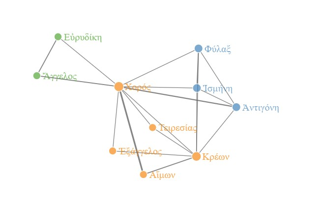
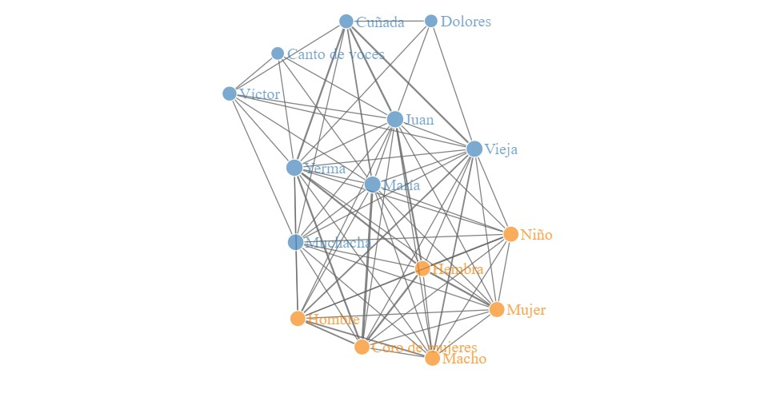

Drama Corpora Project (DraCor) ha ido conformando un repositorio donde se encuentran, en estos momentos, once corpus teatrales diferentes, que pertenecen a periodos, géneros dramáticos y lugares geográficos diversos. Entre estos corpus encontramos veinticinco obras de la Edad de Plata española (finales del XIX-mediados del siglo XX) que conforman el “Spanish Drama Corpus” y que han sido importadas de la Biblioteca Electrónica Textual del Teatro Español de 1868-1936 (BETTE).
Además de los textos dramáticos en XML-TEI que se consultan en DraCor, podemos crear las redes sociales con grafos que conforman los personajes de cada una de dichas piezas dramáticas. Uno de los personajes comunes en muchas de estas piezas y que resulta fundamental en el desarrollo de la trama y para dar corporeidad a los pensamientos de otros personajes lo constituye el Coro.
